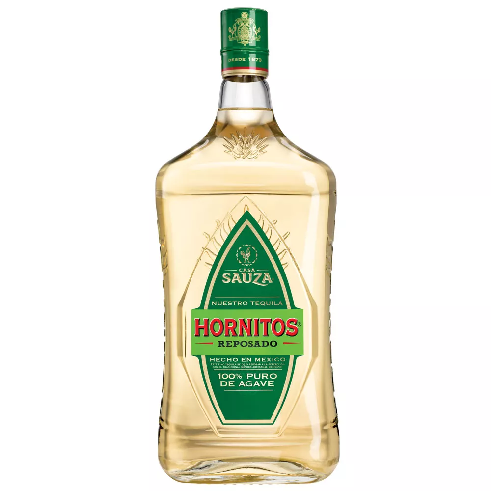

EL TEQUILA EN MEXICO
El tequila es la bebida predilecta de muchos mexicanos y un estandarte que ha llevado el nombre de México a otros países. Nos ha acompañado en la celebración de un triunfo o de un cumpleaños, al cantar con el mariachi y también, en las más fuertes tristezas.
MEJORES TEQUILAS
Pero, ¿realmente conoces las clases de tequila que existen y sus diferencias? ¿Puedes distinguir sus distintos sabores? ¿Sabes cuándo es prudente elegir una clase u otra?
Andrés Rodríguez, presidente internacional de la Academia Mexicana del Tequila, quien nos explicó cada detalle del tequila y nos hizo una selección de los mejores tequilas que podemos encontrar en nuestro país, para que no falles cuando tengas que elegir uno para una ocasión especial y tampoco te dejes seducir por botellas sofisticadas y altos precios que pudieran no precisamente garantizar el mejor tequila.